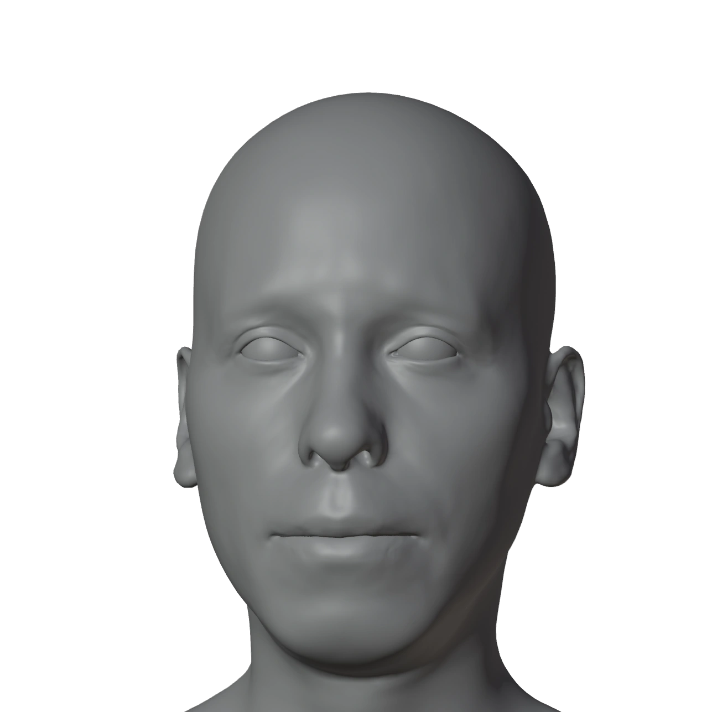
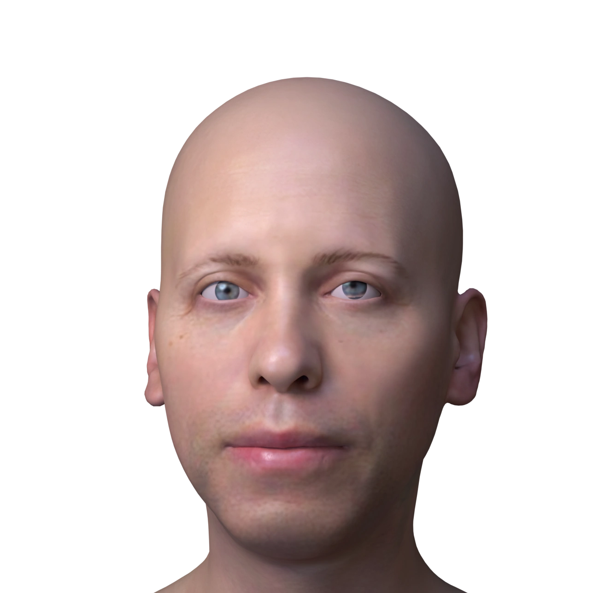

Input Geometry AppearanceBLENDER SCENE / RENDER COMPARISON
NERVFace
Single-image 3D face generation
Project video
Watch on Bilibili ↗3D viewer
Switch between path tracing and real-time rendering. Drag to rotate the model.
Renderer has not started.
Inherited parameters & remaining differences
Camera transforms, original scale, world lighting, area lights, textures and color management come from the source scene. Real-time rendering does not include path-traced global illumination or shadows; disk area lights use a rectangular LTC approximation. Subsurface scattering remains disabled, matching the source. The eyes use an approximation for the separate coat IOR. Wireframe always uses raster rendering.
Source lighting is enabled by default. Selecting an HDRI replaces the source world and area lights with the selected environment; switch back at any time. The web environments use 1K maps. Both PT and real-time rendering support them, with approximate HDRI highlights in real-time mode.
Select a case to inspect its source notes.
Collection status42 ready
All 42 supplement cases use compressed models exported from the final source scenes and support both PT and real-time rendering. Each retains its own camera, lighting, eyes and materials.
Browser rendering and Blender Cycles differ in shading and lighting. For the final offline result, select Render in the case collection above.
Facial animation
Compare the same shape presets and expressions across three path-traced characters.